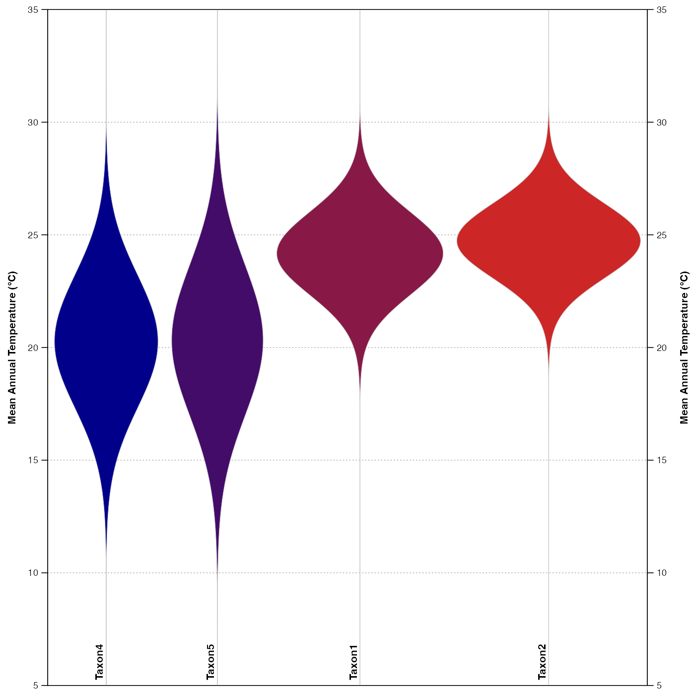

Plot the pdfs as violins
A crestObj generated by either the crest.calibrate,
crest.reconstruct or crest functions.
Climate variables to be used to generate the plot. By default all the variables are included.
A list of taxa to use for the plot (default is all the recorded taxa).
A vector of colours that will be linearly interpolated to give a unique colour to each taxon.
The climate range to plot the pdfs on. Default is the full range
used to fit the pdfs (x$modelling$xrange)
A boolean to indicate if the diagram should be saved as a pdf file.
Default is FALSE.
An absolute or relative path that indicates where the diagram
should be saved. Also used to specify the name of the file. Default:
the file is saved in the working directory under the name
'violinPDFs.pdf'.
The width of the output file in inches (default 7.48in ~ 19cm).
The height of the output file in inches (default 3in ~ 7.6cm per variables).
A boolean to indicate if the output should be saved as a png.
Default is FALSE and the figure is saved as a pdf file.
The resolution of the png file (default 300 pixels per inch).
A table with the climate tolerances of all the taxa
if (FALSE) {
data(crest_ex_pse)
data(crest_ex_selection)
reconstr <- crest.get_modern_data(
pse = crest_ex_pse, taxaType = 0,
climate = c("bio1", "bio12"),
selectedTaxa = crest_ex_selection, dbname = "crest_example"
)
reconstr <- crest.calibrate(reconstr,
geoWeighting = TRUE, climateSpaceWeighting = TRUE,
bin_width = c(2, 20), shape = c("normal", "lognormal")
)
}
## example using pre-saved reconstruction obtained with the previous command.
data(reconstr)
ranges <- plot_violinPDFs(reconstr, save=FALSE, ylim=c(5,35),
taxanames=c(reconstr$inputs$taxa.name[c(2,4,5,1)]),
col=c('darkblue', 'firebrick3'))

lapply(ranges, head)
#> $`Range = 50%`
#> bio1_tol_inf bio1_tol_sup bio1_range
#> Taxon1 23.00601 25.33066 2.324649
#> Taxon2 23.64729 25.81162 2.164329
#> Taxon4 18.35671 22.20441 3.847695
#> Taxon5 18.11623 22.52505 4.408818
#>
#> $`Range = 95%`
#> bio1_tol_inf bio1_tol_sup bio1_range
#> Taxon1 20.68136 27.73547 7.054108
#> Taxon2 21.56313 27.97595 6.412826
#> Taxon4 14.50902 25.97194 11.462926
#> Taxon5 13.86774 26.85371 12.985972
#>